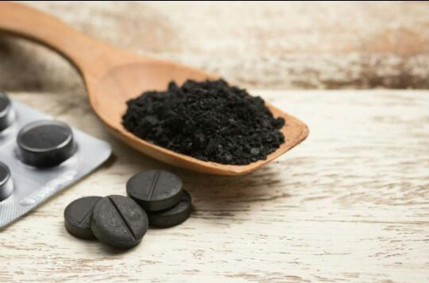
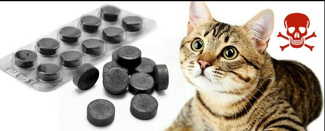

A natureza nos oferece vários recursos fantásticos que podem ser grandes aliados da nossa saúde, o carvão vegetal é um deles. Podendo ser usado tanto para fins medicinais e estéticos, o carvão apresenta características que se utilizadas corretamente, pode ser utilizado como remédio.
Devido sua alta capacidade de absorção, o carvão pode ser utilizado para neutralizar venenos, aliviar a dor e tratar inflamações, mas não dispensa a avaliação de um médico ou profissional.

Carvão em cápsula.
Alguns benefícios para a saúde
Para tratar inflamações, utilize o carvão vegetal em pó misturado em fervura de pimenta-d ’água como compressa e aplique na área inflamada.
O carvão pode ser ingerido com um pouco de água para resolver casos sérios de inflamação. Mistura-se uma colher de sopa de óleo de oliva e uma colher de chá de pó de carvão, e toma-se em jejum e ao deitar, ou três vezes ao dia.
Para feridas que não cicatrizam, use carvão com argila, carvão com óleo de oliva ou só carvão puro.
Para infecções intestinais e diarreia, tome uma colher de carvão de três em três horas
E os benefícios do carvão não param por aí, ele pode ser utilizado também para fins estéticos, conforme as dicas abaixo:
Alguns benefícios para a beleza
O carvão vegetal ativado pode ser utilizado na higiene bucal, escovar os dentes com o elemento ajuda a clarear os dentes e previne o surgimento de cáries, placa bacteriana e mau hálito.
Utilize o carvão vegetal combinado sabonete neutro facial para controlar a oleosidade, revitalizar a pele e prevenir o surgimento de acne
Deixa a pele mais bonita: Na pele, por promover essa limpeza, controla a oleosidade, reduz o tamanho dos poros e também a quantidade dos cravos, tornando-a mais iluminada, uniforme, firme e macia.
Contribui para o controle de gases: Um estudo no American Journal of Gastroenterology descobriu que o carvão ativado pode impedir a formação de gás intestinal, através da ligação dos subprodutos causadores de gases presentes em alguns alimentos, mas a causa de formação de gases é multifatorial e deve ser avaliada por um especialista.
Dá brilho ao cabelo: O carvão ativado ajuda a retirar as impurezas do couro cabeludo, fazendo com que o cabelo fique mais brilhoso e sedoso. Além disso, ajuda na na prevenção de dermatites seborreicas (caspas).
Máscara de carvão.
COMO SALVAR SEUS PETS COM CARVÃO ATIVADO EM CASO DE INTOXICAÇÃO OU ENVENENAMENTO.

Cuidados para com o animal.
Os gatos podem ingerir o carvão ativado sem nenhum dano para a saúde. Ele pode ser encontrado no formato de comprimido e age atraindo e absorvendo as impurezas tóxicas acumuladas no trato gastrointestinal, que são naturalmente eliminadas com as fezes. Lembrando que a administração de carvão ativado NÃO descarta a consulta de emergência com o médico veterinário em quaisquer suspeita de envenenamento!!!
Conforme explica o médico-veterinário da Petz, Dr. Samuel Teófilo, o carvão ativado para cachorro funciona porque é uma substância porosa e absorvente. Ou seja, ele provoca a adesão de outras moléculas a sua superfície. Na prática, quando um cachorro envenenado ingere carvão ativado para cães, o carvão vai se agarrar a parte das toxinas e impedir que elas sejam absorvidas pelo organismo do cachorro.
Contra-Indicações
Quando usado incorretamente e sem orientação médica, o carvão ativado pode causar efeitos colaterais. Segundo a médica ortomolecular e nutróloga Katiana Cruz, o uso do carvão ativado é contraindicado nos seguintes casos:
Gestantes
Amamentação
Crianças
Hipersensibilidade de alguns componentes
Obstrução intestinal
Problemas gastrointestinais
Cirurgia de intestino
Pessoas que ingeriram substâncias corrosivas
Efeitos colaterais
Quando usado incorretamente e sem orientação médica, o carvão ativado pode causar os seguintes efeitos colaterais:
Escurecimento das fezes
Vômitos
Constipação (prisão de ventre)
Diarreia
Prejuízo nutricional quando usado em excesso para efeito Detox